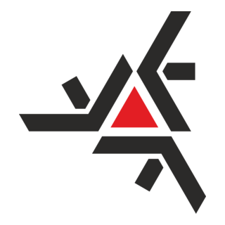

Maringá-PR, 21 anos
(44) 9 9940-8500
Formação Acadêmica

Bacharelado em Ciência da Computação
Universidade Estadual de Maringá - UEM
Agosto de 2021 - Março de 2025
Experiências
PET-Informática
Março de 2022 - Fevereiro de 2025
Como petiano bolsista no grupo PET-Informática, um programa orientado a tríade de Ensino, Pesquisa e Extensão regido pelo MEC e desenvolvido por discentes e um professor tutor em instituições de Ensino Superior do País, desenvolvi atividades nesses pilares como: iniciações científicas, cursos e workshops na área de computação voltados à comunidade interna e externa, além de desenvolver soft skills por meio da organização interna do grupo.
Associação de Comerciantes de Maringá (ACIM)
Outubro de 2024 - Março de 2025
Como estagiário na ACIM, uma associação com o objetivo de “Integrar e representar a comunidade promovendo o desenvolvimento, atuando como formadora de opinião e multiplicadora de conceitos de excelência empresarial”, atuei no desenvolvimento de um sistema web de diagnóstico empresarial.
Como integrante do HUB de Inovação Fronteira, o centro de inovação e empreendedorismo da Universidade Estadual de Maringá, conectando academia, mercado e sociedade, atuei na gestão, desenvolvimento e suporte de sistemas Web.
Competências
Interpessoal
- Comunicação clara
- Trabalho em equipe
- Autonomia
- Análise e solução de problemas
- Ensino e mentoria
- Boa performance sobre pressão
- Adaptabilidade e fácil aprendizado
Técnica
- Linguagens de programação: JavaScript, Python, Lua, C
- Dados: MySQL, PostgreSQL, MongoDB, scikit-learn, polars
- Web: HTML/CSS, Django, Node.js, REST
- Metodologias: Ágil (Scrum, Kanban / Trello, Jira, Github Projects)
- Versionamento: Git/GitHub
- Jogos: LÖVE
Projetos
Sistema de Diagnóstico Empresarial
Especificação, desenvolvimento e gerenciamento de um sistema Web que fornece uma análise abrangente da empresa,
permitindo que ela identifique áreas de melhoria e oportunidades de desenvolvimento, além de mostrar a posição
em relação ao mercado que a empresa ocupa. O sistema visa facilitar o processo de coleta de dados e geração
de relatórios para apoiar a tomada de decisão estratégica.
Desenvolvido com Python, Django, MySQL, TypeScript, Next.js, React e Tailwind.
Idiomas
- Português - Nativo
- Inglês - Intermediário
- Espanhol - Básico
- Japonês - Básico